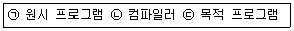
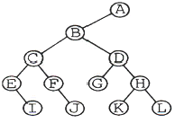
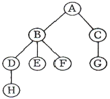
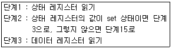
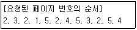
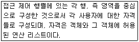
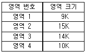
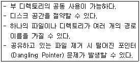
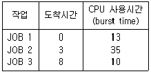

전자계산기조직응용기사 (2014-08-17 기출문제)
1과목: 전자계산기 프로그래밍
1. C 언어에서 프로그램의 변수 선언을 "int c;"로 했을 경우 "&c"는 어떤 의미인가?
- c의 절대값
- c에 저장된 값
- c의 기억장소 주소
- c의 범위
(정답률: 90%)

2. 어셈블리어의 특징으로 옳지 않은 것은?
- 각 명령어가 하나의 기계 명령에 대응되는 저급 언어이다.
- 어셈블리어에서는 데이터가 기억된 번지를 기호(symbol)로 지정한다.
- 어셈블리어는 모든 컴퓨터 기종에 공통으로 적용할 수 있다.
- 어셈블리어는 기계어와 1대1로 대응시켜서 표현한 기호식 표기법이다.
(정답률: 89%)
3. 객체지향에서 하나 이상의 유사한 객체들을 묶어 공통된 특성을 표현한 데이터 추상화를 의미하는 것은?
- 모듈
- 메시지
- 클래스
- 메소드
(정답률: 85%)
4. 고수준 언어로 작성된 원시 프로그램을 컴퓨터 주메모리에 적재해 두고, 그 중 한 명령문씩 꺼내어 이를 해석기에서 중간어로 전환하여 곧바로 실행시키는 것은?
- Loader
- Linker
- Compiler
- Interpreter
(정답률: 72%)
5. 럼바우의 객체 모델링 기법에서 사용하는 세 가지 모델링이 아닌 것은?
- 객체 모델링
- 동적 모델링
- 정적 모델링
- 기능 모델링
(정답률: 87%)
6. 시스템 프로그래밍에 가장 적합한 언어는?
- C
- BASIC
- COBOL
- FORTRAN
(정답률: 92%)
7. C 언어의 비트 단위 연산자 중 1의 보수화와 관계되는 것은?
- ＜＜
- |
- &
- ~
(정답률: 73%)
8. BNF 표기법에서 정의를 나타내는 기호는?
- ==
- ＜＞
- |
- ::=
(정답률: 78%)
9. 객체지향 설계 방법론에 대한 설명으로 옳지 않은 것은?
- 구체적인 절차를 표현한다.
- 객체의 속성과 자료 구조를 표현한다.
- 서브 클래스와 메시지 특성을 세분화하여 세부 사항을 정제화 한다.
- 형식적인 전력으로 기술한다.
(정답률: 61%)
10. 객체지향에서 객체가 메시지를 받아 실행해야 할 객체의 구체적인 연산을 정의한 것은?
- 패키지
- 메소드
- 클래스
- 모듈
(정답률: 84%)
11. 객체지향에서 어떤 클래스에 속하는 구체적인 객체를 의미하는 것은?
- method
- operation
- message
- instance
(정답률: 88%)
12. C 언어에서 정수형 자료 선언 시 사용하는 것은?
- float
- double
- int
- char
(정답률: 85%)
13. 객체지향 설계에 있어서 정보 은폐의 가장 근본적인 목적은?
- 모듈 라이브러리의 재사용을 위하여
- 고려되지 않은 영향들을 최소화하기 위하여
- 코드를 개선하기 위하여
- 결합도를 높이기 위하여
(정답률: 75%)
14. C 언어 명령문 중 "do ~ while"문에 대한 설명으로 옳지 않은 것은?
- 명령의 조건이 거짓일 때 loop를 반복 처리한다.
- 명령의 조건이 거짓일 때도 최소한 한번은 처리한다.
- 무조건 한 번은 실행하고 경우에 따라서는 여러 번 실행하는 처리에 사용하면 유용하다.
- 제일 마지막 문장에 ";" 기호가 필요하다.
(정답률: 80%)
15. 어셈블리어에서 어떤 기호적 이름에 상수 값을 할당하는 명령은?
- ASSUME
- ORG
- EVEN
- EQU
(정답률: 88%)
16. C 언어에서 이스케이프 시퀀스의 설명이 옳지 않은 것은?
- ＼r : carriage return
- ＼t : tab
- ＼f : fault
- ＼b : backspace
(정답률: 83%)
17. 어셈블러를 두 개의 Pass로 구성하는 주된 이유는?
- 한 개의 Pass만을 사용하면 프로그램의 크기가 증가하여 유지보수가 어렵기 때문에
- 기호를 정의하기 전에 사용할 수 있어 프로그램 작성이 용이하기 때문에
- 한 개의 Pass만을 사용하면 메모리가 많이 소요되기 때문에
- pass 1, 2의 어셈블러 프로그램이 작아서 경제적이기 때문에
(정답률: 72%)
18. C 언어에서 문자열 입력 함수는?
- getchar()
- puts()
- gets()
- putchar()
(정답률: 85%)
19. 기계어에 대한 설명으로 옳지 않은 것은?
- 컴퓨터가 해석할 수 있는 1 또는 0의 2진수로 이루어진다.
- 실행할 명령, 데이터, 기억장소의 주소 등을 포함한다.
- 각 컴퓨터마다 모두 같은 기계어를 가진다.
- 프로그램 작성이 어렵고 복잡하다.
(정답률: 91%)
20. 프로그램 수행 순서로 옳은 것은?

- ㉡→㉢→㉠
- ㉠→㉡→㉢
- ㉢→㉠→㉡
- ㉠→㉢→㉡
(정답률: 92%)
2과목: 자료구조 및 데이터통신
21. OSI 7계층 중 통신회선을 통하여 비트전송을 수행하기 위하여 전기적, 기계적인 제어 기능을 수행하는 계층은?
- Physical Layer
- Data link Layer
- Network Layer
- Application Layer
(정답률: 80%)
22. 다음 중 아날로그 데이터를 디지털 신호로 변환하는 과정에 해당하지 않는 것은?
- 표본화
- 부호화
- 양자화
- 분산화
(정답률: 88%)
23. 다음 전송제어 문자 중 각 블록의 시작이나 끝에 삽입되는 문자가 아닌 것은?
- SOH
- SYN
- ETX
- ACK
(정답률: 53%)
24. 패킷교환방식 중 가상회선방식의 특징이 아닌 것은?
- 전송 중에는 동일한 경로를 갖는다.
- 연결 설정 후에는 물리적인 회선을 공유하지 못한다.
- 별도의 호(call) 설정 과정이 있다.
- 프레임 저장 기능이 있다.
(정답률: 66%)
25. IP 주소와 호스트 이름 간의 변환을 제공하는 시스템은?
- DNS
- NFS
- Router
- Modem
(정답률: 82%)
26. FDM(Frequency-Division Multiplexing) 방식의 설명으로 틀린 것은?
- 주파수 분할 다중화는 전화의 장거리 전송망에 도입되어 사용되어 왔다.
- 가변 파장 송신 장치, 가변 파장 수신 장치를 사용하여 특정채널을 선택한다.
- 여러 신호를 전송 매체의 서로 다른 주파수 대역을 이용하여 동시에 전송하는 기술이다.
- 인접한 채널 간의 간섭을 막기 위해 일반적으로 보호대역(Guard Band)을 사용한다.
(정답률: 49%)
27. HDLC는 링크 구성 방식에 따라 세 가지 동작 모드를 가진다. 이에 해당하지 않는 것은?
- NBM
- ABM
- ARM
- NRM
(정답률: 56%)
28. GO-Back-N ARQ에서 7번째 프레임까지 전송하는데 수신측에서 6번째 프레임에 오류가 있다고 재전송을 요청해 왔다. 재전송되는 프레임의 개수는?
- 1
- 2
- 3
- 4
(정답률: 67%)
29. 데이터 교환 방식 중 회선 교환(circuit switching) 방식의 설명으로 틀린 것은?
- 송신스테이션과 수신스테이션 사이에 데이터를 전송하기 전에 먼저 교환기를 통해 물리적으로 연결이 이루어져야 한다.
- 음성이나 동영상과 같이 연속적이면서 실시간 전송이 요구되는 멀티미디어 전송 및 에러 제어와 복구에 적합하다.
- 송신과 수신스테이션 간에 호 설정이 이루어지고 나면 항상 정보를 연속적으로 전송할 수 있는 전용 통신로가 제공되는 셈이다.
- 정보 전송이 완료되면 호 해제를 통하여 점유되었던 회선을 내어 놓음으로써 다른 통신을 위해 사용될 수 있도록 한다.
(정답률: 62%)
30. TCP/IP 모델 중 응용계층 프로토콜에 해당하지 않는 것은?
- IP
- FTP
- SMTP
- TELNET
(정답률: 71%)
31. 해싱 함수의 값을 구한 결과 두 개의 키 값이 동일한 값을 가지는 경우를 무엇이라고 하는가?
- Relation
- Overflow
- Clustering
- Collision
(정답률: 87%)
32. 다음 트리를 후위 순회(Post-order) 방법으로 운행한 결과는?

- A B C D I F J D G H K L
- I E J F C G K L H D B A
- A B C D E F G H I J K L
- E I C F J B G D K H L A
(정답률: 74%)
33. 다음 그림에서 트리의 차수(degree)는?

- 2
- 3
- 4
- 8
(정답률: 82%)
34. 데이터베이스의 3층 스키마에 해당하지 않는 것은?
- 내부 스키마
- 외부 스키마
- 관계 스키마
- 개념 스키마
(정답률: 91%)
35. 데이터베이스관리자(DBA)의 역할로 거리가 먼 것은?
- 응용 프로그램의 개발 및 분석
- DBMS 시스템 자원의 이용도 분석
- 데이터 표현 및 문서화의 표준 설정
- 데이터베이스 설계 및 조작
(정답률: 75%)
36. DBMS의 필수 기능이 아닌 것은?
- 데이터 변경(Data Modification)
- 데이터 조작(Data Manipulation)
- 데이터 정의(Data Definition)
- 데이터 제어(Data Control)
(정답률: 85%)
37. 데이터베이스 설계 단계 순서로 옳은 것은?
- 개념적 설계 → 물리적 설계 → 논리적 설계
- 물리적 설계 → 개념적 설계 → 논리적 설계
- 논리적 설계 → 물리적 설계 → 개념적 설계
- 개념적 설계 → 논리적 설계 → 물리적 설계
(정답률: 86%)
38. 스택에 대한 설명으로 옳지 않은 것은?
- 리스트의 한쪽 끝으로만 자료의 삽입, 삭제 작업이 이루어지는 자료 구조이다.
- 스택으로 할당된 기억공간에 가장 마지막으로 삽입된 자료가 기억된 공간을 가리키는 요소를 TOP이라고 한다.
- 가장 먼저 삽입된 자료가 가장 먼저 삭제되는 FIFO 방식이다.
- 부프로그램 호출 시 복귀주소를 저장할 때 스택을 이용한다.
(정답률: 89%)
39. 인덱스된 순차파일(Indexed Sequential File)의 색인구역(Index Area)에 해당하지 않는 것은?
- Track index area
- Cylinder index area
- Master index area
- Record index area
(정답률: 74%)
40. 선형 자료구조에 해당하지 않는 것은?
- 트리
- 스택
- 큐
- 데크
(정답률: 82%)
3과목: 전자계산기구조
41. CPU의 메이저 상태(Major State)로 볼 수 없는 것은?
- Fetch
- Indirect
- Execute
- Direct
(정답률: 60%)
42. 명령어 파이프라이닝을 사용하는 목적은?
- 기억용량 증대
- 메모리 액세스의 효율증대
- CPU의 프로그램 처리속도 개선
- 입출력 장치의 증설
(정답률: 60%)
43. 공유-기억장치 다중프로세서 시스템에서 사용되는 상호연결 구조가 아닌 것은?
- 버스(bus)
- 큐브(cube)
- 크로스바 스위치
- 다단계 상호연결망
(정답률: 45%)
44. 다음 중 순서논리회로가 아닌 것은?
- 플립플롭 회로
- 레지스터 회로
- 카운터 회로
- 가산기 회로
(정답률: 46%)
45. 자기 테이프에 대한 설명 중 옳지 않은 것은?
- Direct access가 가능하다.
- 각 블록 사이에 간격(gab)이 존재한다.
- 7-9 bit가 동시에 수록되고 전달된다.
- Sequential access가 가능하다.
(정답률: 57%)
46. 65536 워드(word)의 메모리 용량을 갖는 컴퓨터가 있다. 프로그램 카운터(PC)는 몇 비트인가?
- 8
- 16
- 32
- 64
(정답률: 75%)
47. 입·출력 제어 방식에서 다음의 방식은 무엇인가?

- 프로그램에 의한 I/O(programmed I/O)
- 인터럽트에 의한 I/P(interrupt I/O)
- DMA에 의한 I/O
- IOP(I/O 프로세서)
(정답률: 47%)
48. 플립플롭이 가지고 있는 기능은?
- 전송 기능
- 기억 기능
- 증폭 기능
- 전원 기능
(정답률: 65%)
49. 중앙 연산 처리장치의 하드웨어적인 요소가 아닌 것은?
- IR
- MAR
- MODEM
- PC
(정답률: 57%)
50. 중앙처리장치와 기억장치 사이에 실질적인 대역폭(band-width)을 늘리기 위한 방법으로 사용하는 것은?
- 메모리 인터리빙
- 자기기억 장치
- RAM
- 폴링
(정답률: 70%)
51. 고정배선제어방식과 비교하여 마이크로프로그램을 이용한 제어방식의 특징으로 볼 수 없는 것은?
- 구조적이고 임의적인 설계가 가능하다.
- 경제적이며 시스템의 설계비용을 줄일 수 있다.
- 보다 용이한 유지보수 관리가 가능하다.
- 처리속도가 빠르고 시스템이 간단할 때 유리하다.
(정답률: 58%)
52. 컴퓨터 기억장치의 주소설계 시 고려사항으로 옳지 않은 것은?
- 주소를 효율적으로 나타내야 한다.
- 주소 표시는 16진법으로 표기해야 한다.
- 사용자에게 편리하도록 해야 한다.
- 주소공간과 기억공간을 독립시킬 수 있어야 한다.
(정답률: 59%)
53. 1011인 매크로 동작(Macro-operation)을 0101100인 마이크로 명령어(micro-instruction) 주소로 변환하고자 할 때 사용되는 기법을 무엇이라 하는가?
- Carry-look-ahead
- time-sharing
- multiprogramming
- mapping
(정답률: 67%)
54. PC의 인터럽트(interrupt) 가운데 프린터에 용지가 부족할 때 발생되는 인터럽트는?
- PC 하드웨어 인터럽트
- 인텔 하드웨어 인터럽트
- PC 소프트웨어 인터럽트
- 응용 소프트웨어 인터럽트
(정답률: 63%)
55. 인터럽트의 발생 요인으로 가장 적당하지 않은 것은?
- 정전 발생시
- 부프로그램 호출
- 프로그램 착오
- 불법적인 인스트럭션 수행
(정답률: 54%)
56. 상대 주소지정 방식을 사용하는 JUMP 명령어가 750번지에 저장되어 있다. 오퍼랜드 A=56일 때와 A=-61일 때 몇 번지로 JUMP 하는가? (단, PC는 1씩 증가한다고 가정한다.)
- 806, 689
- 56, 745
- 807, 690
- 56, 689
(정답률: 54%)
57. 프로그래머가 어셈블리 언어(Assembly language)로 프로그램을 작성할 때 반복되는 일련의 같은 연산을 효과적으로 처리하기 위해 필요한 것은?
- 매크로(MACRO)
- 함수(function)
- reserved instruction set
- 마이크로 프로그래밍(micro-programming)
(정답률: 76%)
58. PE(Processing Element)라 불리는 복수개의 산술, 논리연산 장치를 갖는 프로세서로 동기적으로 병렬처리를 수행하고 동시에 같은 기능을 수행하는 처리기를 무엇이라 하는가?
- 파이프라인 처리기(Pipeline Processor)
- 배열 처리기(Array Processor)
- 단일 처리기(Single Processor)
- 다중 처리기(Multi Processor)
(정답률: 41%)
59. 일반적으로 명령어 파이프라인이 정상적인 동작에서 벗어나게 하는 원인으로 틀린 것은?
- 자원 충돌(resource conflict)
- 데이터 의존성(data dependency)
- 분기 곤란(branch difficulty)
- 지연된 분기(delayed branch)
(정답률: 32%)
60. 프로그램을 통한 입출력 방식에서 입출력장치 인터페이스에 포함되어야 하는 하드웨어가 아닌 것은?
- 데이터 레지스터
- 장치의 동작 상태를 나타내는 플래그(flag)
- 단어 계수기
- 장치 번호 디코더
(정답률: 30%)
4과목: 운영체제
61. 분산 처리 운영체제 시스템의 구축 목적으로 거리가 먼 것은?
- 보안성 향상
- 자원 공유의 용이성
- 연산 속도 향상
- 신뢰성 향상
(정답률: 75%)
62. 운영체제의 역할로 거리가 먼 것은?
- 고급 언어로 작성된 소스 프로그램을 기계어로 변환시킨다.
- 사용자 간의 데이터를 공유하게 해 준다.
- 사용자와 컴퓨터 시스템 간의 인터페이스 기능을 제공한다.
- 입, 출력 역할을 지원한다.
(정답률: 74%)
63. 스레드(Thread)에 대한 설명으로 거리가 먼 것은?
- 하나의 스레드는 상태를 줄인 경량 프로세스라고도 한다.
- 프로세스 내부에 포함되는 스레드는 공통적으로 접근 가능한 기억장치를 통해 효율적으로 통신한다.
- 스레드를 사용하면 하드웨어, 운영체제의 성능과 응용 프로그램의 처리율을 향상시킬 수 있다.
- 하나의 프로세스에 여러 개의 스레드가 존재할 수 없다.
(정답률: 76%)
64. 목적 프로그램을 기억장소에 적재시키는 기능만 수행하는 로더로서, 할당 및 연결은 프로그래머가 프로그램 작성 시 수행하며, 재배치는 언어번역프로그램이 담당하는 것은?
- Absolute Loader
- Compile And Go Loader
- Direct Linking Loader
- Dynamic Loading Loader
(정답률: 54%)
65. 3개의 페이지 프레임(Frame)을 가진 기억장치에서 페이지 요청을 다음과 같은 페이지 번호 순으로 요청했을 때 교체 알고리즘으로 FIFO 방법을 사용한다면 몇 번의 페이지 부재(Fault)가 발생하는가? (단, 현재 기억장치는 모두 비어있다고 가정한다.)

- 7
- 8
- 9
- 10
(정답률: 49%)
66. 운영체제의 운용 기법 중 중앙처리장치의 시간을 각 사용자에게 균등하게 분할하여 사용하는 체제로서 모든 컴퓨터 사용자에게 똑같은 서비스를 제공하는 것을 목표로 삼고 있으며, 라운드 로빈 스케줄링을 사용하는 것은?
- Real-time processing system
- Time sharing system
- Batch processing system
- Distributed processing system
(정답률: 74%)
67. HRN(Highest Response-ratio Next) 스케줄링 방식에 대한 설명으로 옳지 않은 것은?
- 우선순위를 계산하여 그 숫자가 가장 낮은 것부터 높은 순으로 우선 준위가 부여된다.
- SJF 기법을 보완하기 위한 방식이다.
- 긴 작업과 짧은 작업 간의 지나친 불평등을 해소할 수 있다.
- 우선순위 결정식은 {(대기시간＋서비스시간)/서비스시간}이다.
(정답률: 68%)
68. 프로세서의 상호 연결 구조 중 하이퍼 큐브 구조에서 각 CPU가 3개의 연결점을 가질 경우 CPU의 총 개수는?
- 8
- 16
- 32
- 65536
(정답률: 69%)
69. 페이지(page) 크기에 대한 설명으로 옳은 것은?
- 페이지 크기가 작을 경우, 동일한 크기의 프로그램에 더 많은 수의 페이지가 필요하게 되어 주소 변환에 필요한 사상표의 공간은 더 작게 요구된다.
- 페이지 크기가 작을 경우, 페이지 단편화를 감소시키고 특정한 참조 지역성만을 포함하기 때문에 기억장치 효율은 좋을 수 있다.
- 페이지 크기가 클 경우, 페이지 단편화로 인해 많은 기억공간을 낭비하고 페이지 사상표의 크기도 늘어난다.
- 페이지 크기가 클 경우, 디스크와 기억장치 간에 대량의 바이트 단위로 페이지가 이동하기 때문에 디스크 접근 시간 부담이 증가되어 페이지 이동 효율이 나빠진다.
(정답률: 48%)
70. UNIX 파일 시스템 구조에서 전체 파일 시스템에 대한 정보를 저장하고 있는 블록은?
- I-NODE 블록
- 데이터 블록
- 슈퍼 블록
- 부트 블록
(정답률: 44%)
71. 다음 설명에 해당하는 자원 보호 기법은?

- Global Table
- Capability List
- Access Control List
- Lock/Key
(정답률: 39%)
72. 파일 소유에 대한 사용자를 변경하는 UNIX 명령은?
- cat
- find
- chown
- finger
(정답률: 75%)
73. 주기억장치 관리 기법 중 Best-fit을 사용할 경우 12K의 프로그램이 할당받게 되는 영역 번호는? (단, 모든 영역은 현재 공백 상태이며, 탐색은 위에서 아래로 한다고 가정한다.)

- 영역 1
- 영역 2
- 영역 3
- 영역 4
(정답률: 69%)
74. 분산 운영체제의 개념 중강결합(TIGHTLY-COUPLED) 시스템의 설명으로 옳지 않은 것은?
- 프로세서 간의 통신은 공유 메모리를 이용한다.
- 여러 처리기들 간에 하나의 저장장치를 공유한다.
- 메모리에 대한 프로세서 간의 경쟁 최소화가 고려되어야 한다.
- 각 사이트는 자신만의 독립된 운영체제와 주기억장치를 갖는다.
(정답률: 60%)
75. 다음 설명에 해당하는 디렉토리 구조는?

- 비순환 그래프 디렉토리 시스템
- 트리 구조 디렉토리 시스템
- 1단계 디렉토리 시스템
- 2단계 디렉토리 시스템
(정답률: 56%)
76. FIFO 스케줄링에서 3개의 작업 도착시간과 CPU 사용시간(burst time)이 다음 표와 같다. 이때 모든 작업들의 평균 반환시간(turn around time)은? (단, 소수점 이하는 반올림 처리한다.)

- 16
- 20
- 33
- 36
(정답률: 42%)
77. UNIX의 특징으로 볼 수 없는 것은?
- 대화식 운영체제이다.
- 다중 사용자 시스템(Multi-user system)이다.
- 높은 이식성과 확장성이 있다.
- 파일 시스템은 2단계 디렉토리 구조이다.
(정답률: 68%)
78. 파일 디스크립터에 대한 설명으로 옳지 않은 것은?
- 사용자가 관리하므로 사용자가 직접 참조할 수 있다.
- 파일을 관리하기 위해 시스템이 필요로 하는 정보를 보관한다.
- 일반적으로 보조기억장치에 저장되어 있다가 파일이 개방(open)될 때 주기억장치로 옮겨진다.
- File Control Block이라고도 한다.
(정답률: 68%)
79. 프로세스의 정의로 거리가 먼 것은?
- 운영체제가 관리하는 실행 단위
- PCB를 갖는 프로그램
- 동기적 행위를 일으키는 주체
- 실행 중인 프로그램
(정답률: 70%)
80. 시간 구역성(Temporal Locality)과 거리가 먼 것은?
- 스택
- 순환문
- 부프로그램
- 배열 순회
(정답률: 49%)
5과목: 마이크로 전자계산기
81. 캐리 플래그가 리셋되었을 때 어떤 무부호 2진수를 곱셈 명령을 사용하지 않고 2로 곱하는 효과를 갖고 있는 명령어는?
- shift right
- shift left
- exclusive OR
- rotate right
(정답률: 71%)
82. 다음 중 로더(loader)의 기능에 속하지 않는 것은?
- Allocation
- Translation
- Linking
- Relocation
(정답률: 70%)
83. ROM의 기억 특성은?
- 휘발성이며, 파괴적으로 읽는다.
- 비휘발성이며, 파괴적으로 읽는다.
- 휘발성이며, 비파괴적으로 읽는다.
- 비휘발성이며, 비파괴적으로 읽는다.
(정답률: 74%)
84. Program Counter에 대한 설명으로 틀린 것은?
- 다음에 수행될 명령어의 주소를 저장한다.
- 분기 명령어가 아니라면 일반적으로 1~4가 증가한다.
- 분기 명령어의 주소 부분은 PC 값으로 전송된다.
- 연산의 결과를 저장하기 위한 레지스터이다.
(정답률: 74%)
85. 시스템의 상태를 기록하기 위한 상태비트들의 집합을 나타내는 것은?
- DMA
- 마이크로 명령
- PSW(program status word)
- 캐시(cache)
(정답률: 73%)
86. 주메모리의 성능을 평가하는 중요한 요소가 아닌 것은?
- 사이클 시간
- 대역폭
- 기억소자
- 기억용량
(정답률: 66%)
87. DMA(Direct Memory Access)에 대한 설명으로 틀린 것은?
- 메모리와 외부회로가 직접 데이터를 주고받는다.
- 고속으로 대량의 데이터를 전송할 때 주로 사용한다.
- memory mapped I/O 방식의 일종이다.
- DMA 제어기는 내부에 어드레스 레지스터, 카운터 레지스터를 가진다.
(정답률: 52%)
88. 제어 프로그램의 중추적 기능을 담당하는 프로그램으로서 처리 프로그램의 실행 과정과 시스템 전체의 동작 상태를 감독하고 지원하는 기능을 수행하는 제어 프로그램은?
- data management program
- supervisor program
- system control program
- status control program
(정답률: 71%)
89. 500[KHz] 클록을 사용하는 시스템의 클록 사이클 시간은?
- 2μs
- 25μs
- 20μs
- 250μs
(정답률: 47%)
90. 입력된 아날로그 신호의 레벨을 미리 지정된 기준 레벨과 비교하고, 양자화 된 레벨을 식별하여 그 값을 디지털 신호로 출력하는 장치를 무엇이라 하는가?
- Decoder
- Encoder
- D/A Converter
- A/D Converter
(정답률: 78%)
91. 마이크로컴퓨터 운영체제의 기능과 거리가 먼 것은?
- 파일 보호
- 파일 디렉토리 관리
- 상주 모니터로의 모드 전환
- 사용자 프로그램의 번역 및 실행
(정답률: 58%)
92. 여러 개의 입출력장치가 연결되어 있을 때 CPU가 각 장치의 상태 플래그를 순서대로 검사하는 과정을 무엇이라 하는가?
- interrupting
- controlling
- status checking
- polling
(정답률: 49%)
93. 하드웨어적으로 인터럽트 요청 장치의 우선순위를 판별할 수 있게 해주는 장치는?
- polling
- vectoring
- daisy chain
- DMA
(정답률: 73%)
94. 다음의 정보통신용 버스 중 병렬전송이 아닌 것은?
- VME bus
- RS-232C
- Multi bus
- IEEE-488 bus
(정답률: 72%)
95. Dynamic RAM과 Static RAM을 비교한 것 중 틀린 것은?
- 통상 Dynamic RAM은 Static RAM보다 많은 기억용량을 가진다.
- Static RAM은 매 밀리 초(ms)마다 cell에 refresh 신호를 가해야 한다.
- Dynamic RAM의 Storage cell은 Static RAM의 것보다 작다.
- Static RAM은 전원을 끊는 순간 기억된 DATA가 소멸된다.
(정답률: 58%)
96. two pass 어셈블러에서 second pass시 사용되는 테이블이 아닌 것은?
- 의사 명령어(pseudo - Instruction) 테이블
- MRI(Memory Reference Instruction) 테이블
- 주소 기호(Address symbol) 테이블
- 매크로(Macro) 테이블
(정답률: 36%)
97. 마이크로컴퓨터의 시스템 소프트웨어 중사용자가 작성한 프로그램을 실행하면서 에러를 검출하고자 할 때 사용되는 것은?
- 로더(loader)
- 디버거(debugger)
- 컴파일러(compiler)
- 텍스트 에디터(text editor)
(정답률: 87%)
98. 순차접근 방식이고 속도가 빠르며 메모리 셀이 콘덴서로 되어 있어 충전 전하를 이동시키면서 시프트 레지스터 기능을 갖는 보조 기억장치는?
- 자기 버블(magnetic bubble)
- CCD(charge coupled device)
- 자기 테이프(magnetic tape)
- 자기 코어(magnetic core)
(정답률: 48%)
99. 마이크로프로세서가 I/O 인터페이스로부터 요청된 인터럽트를 해결하기 위해 I/O 주변 장치를 인식하는 방법 중 인식 과정의 속도를 향상시키기 위하여 각 I/O 주변장치에 특정 코드를 할당하는 방법은?
- 폴링 방식
- 벡터 인터럽트 방식
- 다중 인터럽트 방식
- 프로그램 제어 방식
(정답률: 62%)
100. 20[MHz] 발진기를 사용하는 CPU에서 10개의 T 스테이트(State)가 필요한 명령의 명령 사이클 시간(Instruction Cycle Time)은 얼마인가?
- 500ns
- 50ns
- 200ns
- 20ns
(정답률: 45%)